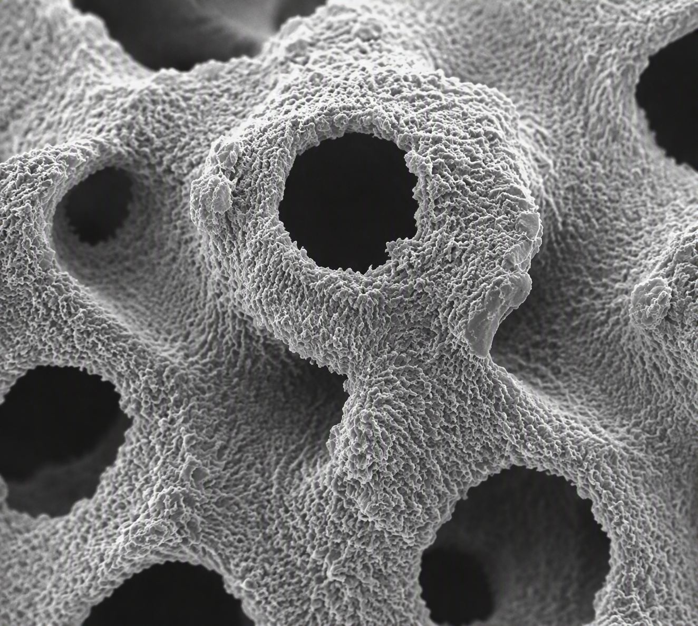
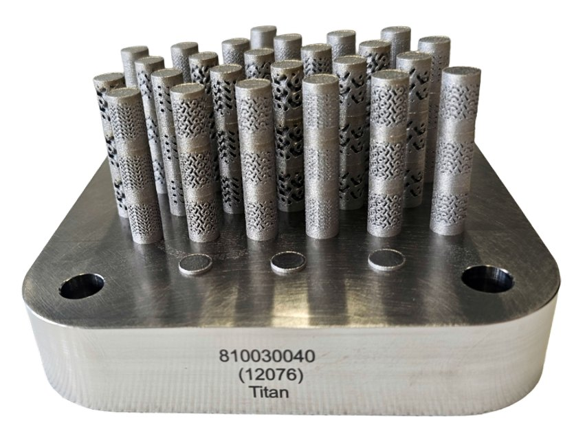
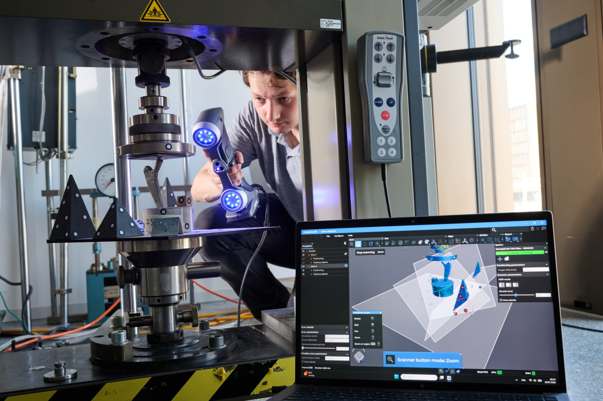
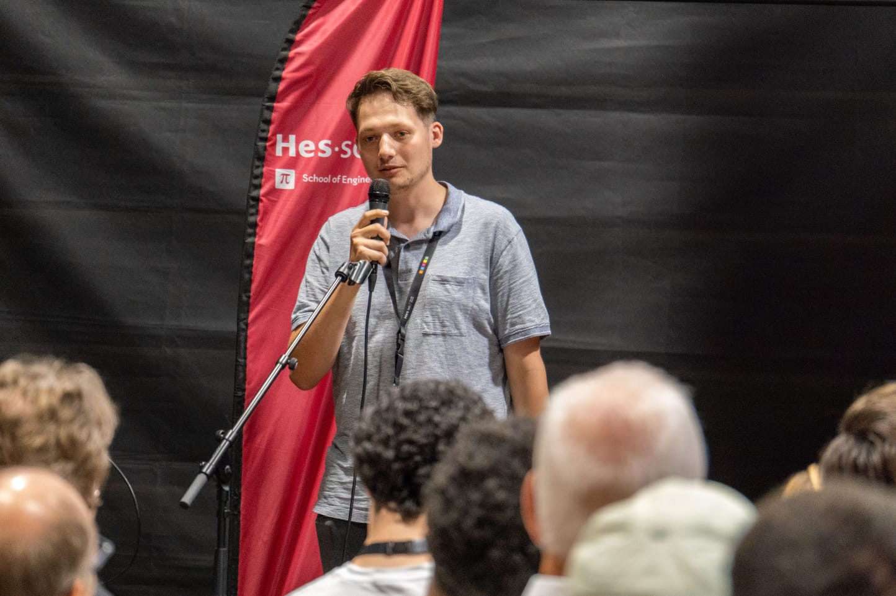

← Arbeiten / Blatt 01
Generatives Design und Fertigung einer bioinspirierten Prothese mit Knochenstruktur
Bioinspirierte Oberschenkelprothese mit TPMS-Strukturen, die generatives Design und additive LPBF-Fertigung in Ti6Al4V kombiniert.

Abb. — Probekörper Ø8 × 14 mmTi6Al4V / LPBF
Technische Daten
Werkstoff
Ti6Al4V
Verfahren
LPBF — Laser-Pulverbettschmelzen
Anwendung
Hüfttotalprothese
Ziel-Modul
3 GPa
Architekturen
Gyroid · Split-P · Diamond
Werkzeuge
nTop · ANSYS · Python
Betreuung
Prof. Haifa Sallem
Ziel
Entwicklung einer bioinspirierten Oberschenkelprothese mit TPMS-Strukturen (Triply Periodic Minimal Surfaces), die generatives Design und additive LPBF-Fertigung kombiniert, um ihr mechanisches Verhalten an jenes des natürlichen Knochens anzunähern. Arbeit unter der Leitung von Prof. Haifa Sallem, im Bereich Design & Materials.
Experimentelle Charakterisierung
Die Charakterisierung zylindrischer Proben (Ø8 × 14 mm) aus Ti6Al4V ermöglichte den Aufbau einer Datenbank zum mechanischen Verhalten für mehrere TPMS-Architekturen (Gyroid, Split-P, Diamond) sowie die Festlegung der mittels LPBF druckbaren Grenzparameter, insbesondere der minimalen Wandstärke und der zulässigen Zellgrösse.

Konstruktion durch Simulation
Eine Untersuchung des Elastizitätsmoduls der Prothese mittels Finite-Elemente-Simulation zeigt, dass sich die Durchbiegung des implantierten Femurs bei 3 GPa mit jener des gesunden Femurs kreuzt, ein Wert, der als Konstruktionsziel festgelegt wurde. Dieses Ziel wurde mit der experimentellen Datenbank abgeglichen, um die Zellparameter anzupassen.
Testprotokoll und Ergebnisse
Da keine Norm die Validierung dieser Art von Prothese abdeckt, wurde ein Testprotokoll aus bestehenden Normen abgeleitet, mit Einbettung in Zement und quasi-statischer zyklischer Belastung. Die gemessene Steifigkeit lag 16- bis 18-mal über der Vorhersage. Die Analyse dieser Abweichung zeigte den Einfluss der Nachgiebigkeit des Prüfaufbaus, idealisierter Randbedingungen und additiver Fertigungsfehler; diese Erkenntnisse bestimmen die nächsten Modelliterationen.


Entwickeltes Werkzeug
Eine Software zur Automatisierung des gesamten Arbeitsablaufs (Generierung, Simulation, Ergebnisverarbeitung) wurde entwickelt, um die Studie reproduzierbar zu machen.
Analysierte Abweichung
16 bis 18 ×
Der Vergleich von Simulation und Versuch identifizierte die wichtigsten Ursachen der Abweichung: Nachgiebigkeit des Prüfaufbaus, idealisierte Randbedingungen und Fertigungsfehler. Dieses Validierungsergebnis bildet eine konkrete Grundlage zur Verfeinerung des Modells.
Auszeichnungen
Die Bachelorarbeit wurde mit der Bestnote bewertet. Bei der Pitch Challenge der Hochschule für Ingenieurwissenschaften in Monthey gewann sie den Publikumspreis. An der Diplomfeier erhielt sie zudem den SCINTILLA AG-Preis für die Qualität der geleisteten Arbeit.